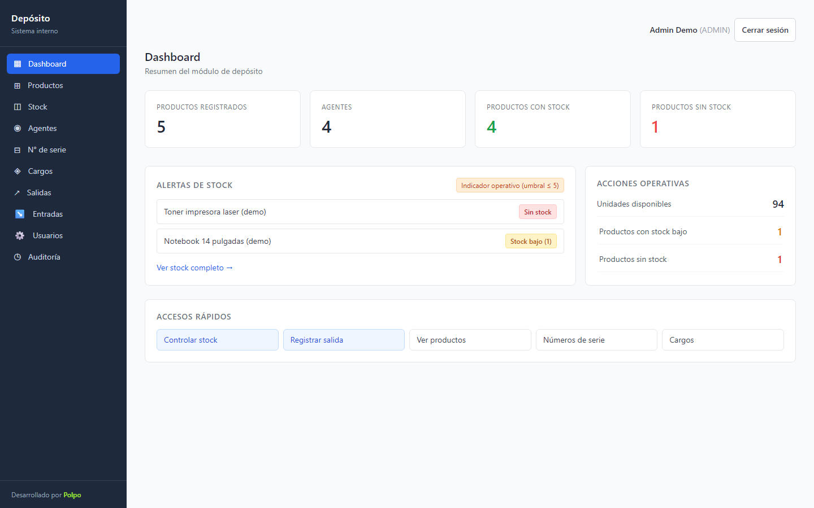
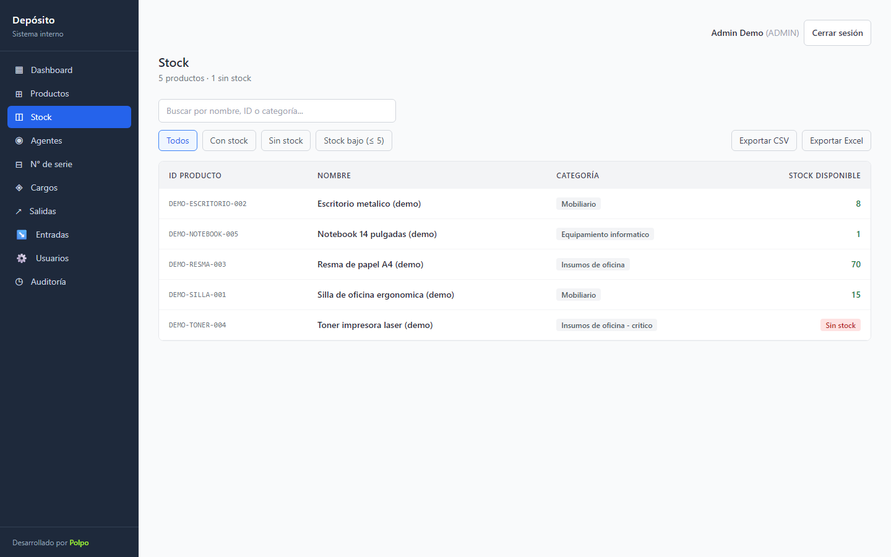
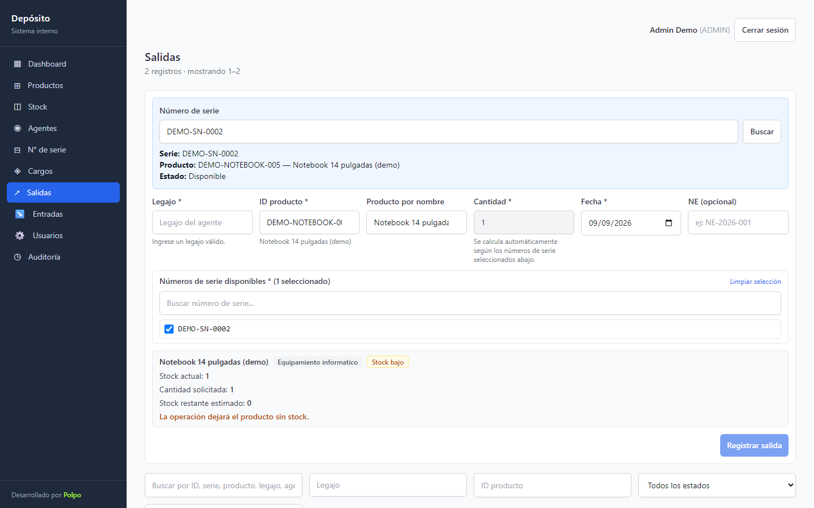
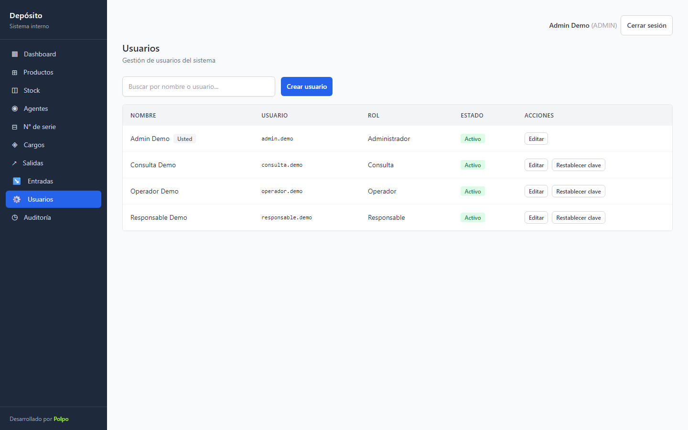
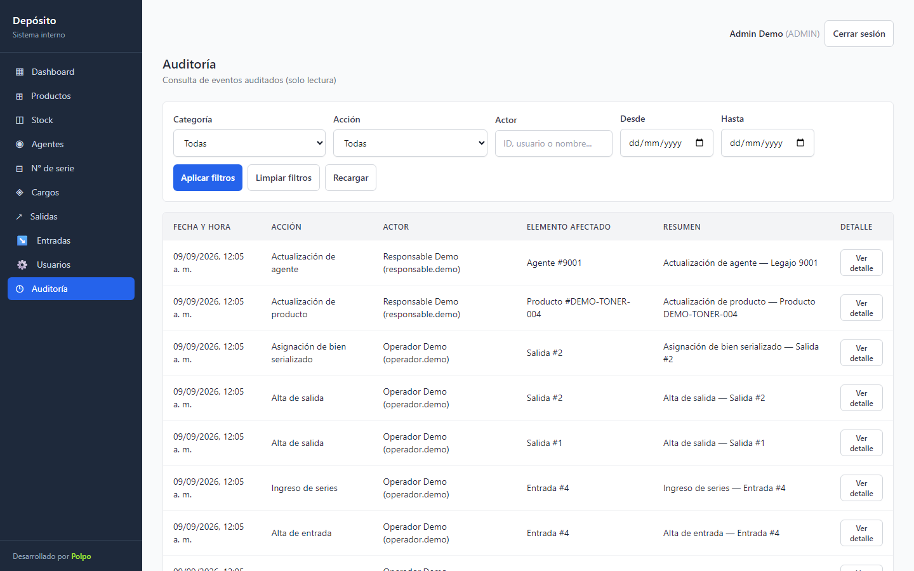

Los datos ya tenían una historia antes de que existiera esta aplicación.
Productos, stock, entradas, salidas, series y cargos ya vivían en tablas legacy. Había que consultar y operar sobre esa estructura sin forzar una migración total ni asumir que podía cambiarse todo de una vez.
Elegí una evolución incremental: conservar las tablas operativas y agregar de forma separada las capacidades nuevas que la aplicación necesitaba —usuarios, sesiones, auditoría y control de movimientos.

Antes de automatizar movimientos, necesitaba que consultar el estado del depósito fuera simple.
La aplicación organiza productos y existencias en una interfaz pensada para uso diario. A partir de esa base fui incorporando altas, entradas, salidas y búsquedas por número de serie.
Las reglas importantes no quedan en la interfaz: el backend vuelve a validar cada operación antes de modificar datos.

Una salida no es sólo restar una unidad.
Cuando hay bienes serializados, la operación necesita vincular una unidad concreta, validar su disponibilidad y dejar registrado quién hizo el movimiento. El sistema incorpora búsqueda exacta por serie y reglas específicas para este flujo.
También contempla correcciones y anulaciones con permisos diferenciados. La intención es preservar la historia, no borrar físicamente aquello que después puede necesitar explicación.

No todas las personas deberían poder hacer lo mismo.
El sistema diferencia cuatro responsabilidades: ADMIN, RESPONSABLE, OPERADOR y CONSULTA. La interfaz adapta lo que muestra, pero la autorización vuelve a comprobarse en el servidor en cada request protegido.
Las sesiones son opacas y se almacenan del lado servidor. La cookie es HttpOnly y las contraseñas se derivan con scrypt y salt aleatorio.

Quería poder responder quién hizo qué sin depender de la memoria.
La aplicación registra eventos de autenticación, gestión de usuarios y movimientos. En correcciones y anulaciones mantiene estado y versión del movimiento, y asocia los cambios al evento correspondiente.
Ese criterio de trazabilidad terminó siendo más importante que varias funcionalidades visibles: permite revisar una acción sensible después de que ocurrió.

La modernización fue una capa, no una demolición.
Convivir con legacy
Los repositorios traducen la estructura existente al dominio de la aplicación sin ocultar que esas tablas siguen siendo la base operativa.
Permisos server-side
La UI nunca es la fuente de verdad para autorizar una acción sensible.
LAN sólo de forma deliberada
La aplicación conserva localhost como comportamiento por defecto y requiere configuración explícita para exponerse en red.
Diseñé alrededor de las restricciones que ya estaban ahí.
Analicé el proceso del depósito, definí arquitectura, permisos y reglas, implementé backend y frontend, integré la aplicación con la base legacy y diseñé las migraciones propias de seguridad y auditoría.
Para documentar el caso público levanté un Postgres descartable aislado y cargué datos 100% ficticios mediante la API de la aplicación. La suite ejecutada para esta preparación quedó en 2.072 tests verdes en 137 archivos, además de build backend y frontend sin errores.
Modernizar una operación también significa saber qué no conviene reemplazar todavía y construir controles alrededor de esa decisión.
Volver a los casos